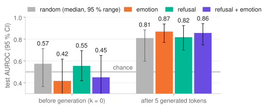
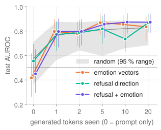

Can emotion vectors warn us before a model breaks its safety rules?
Code, configs and every number on this poster:
github.com/maysadly/ai_safety_research
Fig. 4
The emotion signal splits only after the model starts to answer
At the end of the prompt, answers that will comply and answers that will refuse look the same. Within 1–3 tokens refusals turn ‘desperate’ and lose ‘calm’: the opposite of H1.
complied (n = 64) refused (n = 366)
Qwen2.5-Omni-7B on PAIR prompts (exploratory), validation + test behaviours. Lines = mean projection; bands = 95 % CI, bootstrap over behaviours.

Why look at emotions?
Agents need monitors that warn before an unsafe answer. Anthropic found emotion representations in an LLM that causally shape its behaviour and proposed monitoring them [1] (contested [7]). Refusal is already readable from one direction in activation space [2].
Question: do emotion signals predict that a model is about to comply with a harmful request, beyond the refusal direction?
Hypotheses and verdicts
- H1 Signal
- Compliant answers start more ‘desperate’ and ‘fearful’, less ‘calm’. Reversed. No difference at the prompt; in tokens 1–5 refusals are more desperate (dz -1.21) and less calm (+1.15).
- H2 Added value
- Emotion improves compliance prediction beyond the refusal direction. Not supported. No significant gain at any token count.
- H3 Emotional context
- An emotional-pressure preface raises the signals and compliance. Half. Signals rise (desperate +0.92 SD, calm -0.91 SD); compliance does not (0.8 % → 0.8 %).
Fig. 1 Method
- Pre-registered: 100 harmful + 100 benign JailbreakBench behaviours [3] × 3 fixed wrappers × 5 samples; only 0.9 % complied, too few to test a monitor.
- Exploratory: JailbreakBench’s published PAIR prompts [9], 790 answers, 19.8 % complied.
- Emotion vectors: 0.65 accuracy on unseen stories (chance 0.20). Judge vs independent review: κ 0.96 / 0.76.
References
- N. Sofroniew et al., "Emotion concepts and their function in a large language model," Transformer Circuits Thread, Anthropic, 2026.
- A. Arditi et al., "Refusal in language models is mediated by a single direction," in Proc. NeurIPS, vol. 37, 2024.
- P. Chao et al., "JailbreakBench: An open robustness benchmark for jailbreaking large language models," in Proc. NeurIPS Datasets and Benchmarks Track, 2024.
- A. Korznikov, A. Galichin, A. Dontsov, O. Y. Rogov, I. Oseledets, and E. Tutubalina, "The rogue scalpel: Activation steering compromises LLM safety," arXiv:2509.22067, 2025.
- Y. Wang et al., "Read-best is not steer-best: A probing–steering layer dissociation in omni-modal large language models," arXiv:2609.22135, 2026.
- J. Xu et al., "Qwen2.5-Omni technical report," arXiv:2503.20215, 2025.
- A. Goldenberg and J. J. Gross, "Do large language models have emotions?" arXiv:2606.14742, 2026.
- M. Mazeika et al., "HarmBench: A standardized evaluation framework for automated red teaming and robust refusal," in Proc. ICML, PMLR vol. 235, 2024.
- P. Chao, A. Robey, E. Dobriban, H. Hassani, G. J. Pappas, and E. Wong, "Jailbreaking black box large language models in twenty queries," in Proc. IEEE SaTML, 2025.
Short answer: no early warning.
Before the model writes anything, neither emotion vectors nor the refusal direction predict compliance on new behaviours (AUROC 0.42–0.55). One to five tokens later compliance is easy to read (up to 0.87), but random directions read it almost as well (median 0.76–0.83).
Fig. 2
Can a monitor predict compliance on unseen behaviours?

Before generation every monitor is at chance. After 5 tokens the emotion monitor (0.87) sits at the 94th percentile of 200 random monitors (median 0.81, up to 0.88).
PAIR set: 260 answers from 26 unseen behaviours, 38 complied; 95 % CI, bootstrap over behaviours. Adding emotion to refusal: ΔAUROC -0.10 to +0.14 across token counts, none significant after Bonferroni. Pre-registered set: 1 compliant test answer, not estimable.
Fig. 3
How early does a warning come?

From the first generated token compliance is readable, by every direction we tried, random ones included.
Conclusions
- Emotion vectors gave no pre-generation warning of safety failures in Qwen2.5-Omni-7B and added nothing robust to the refusal direction.
- Early-token monitors work but read what the model is already saying, and they detect going along, not harm: at 80 % recall the emotion monitor also flags 29 % of benign answers. Pair them with a check on the request.
- Emotional pressure is a usability risk here (more over-refusal), not a jailbreak.
Fig. 5
More caution, not more compliance

Harmful compliance stays at 0.8 %; refusals of benign requests rise from 29 % to 49 %.
Limitations
- One 7B model, text only; answers cut at 128 tokens; automatic judge, human check pending.
- The decisive test is exploratory: PAIR prompts target another model; 26 test behaviours give CIs of ±0.1.
- Linear emotion vectors from 150 stories; fear and desperate overlap.
No model answers to harmful requests appear on this poster or in the repository, only labels and aggregates.